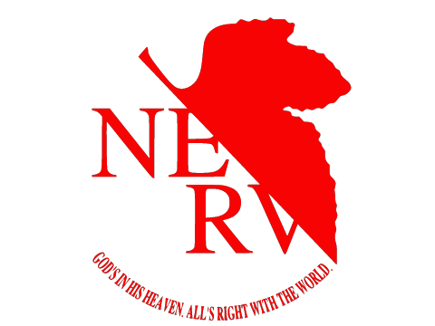

エヴァンゲリオン

～あらすじ～エヴァ序公式サイト ストーリーより引用
突如世界を襲った未曾有の大災害“セカンド・インパクト”。この影響で人類の半数近くは死にいたり、世界の各地には大破壊の痕跡が刻みこまれた。やっと平穏な日々が戻ったと思われたとき――14 歳の少年・碇シンジは父親から第3新東京市へ呼び出されて、出迎えを待っていた。
その眼前の山あいから、巨大な生物が出現！ それは「使徒」と呼ばれる正体不明の存在で、たちまち国連軍と激しい交戦を開始した。爆風に巻きこまれ、危機に陥るシンジ。その生命を救ったのは、葛城ミサトと名乗る女性だった。
ミサトの車で特務機関NERV（ネルフ）の本部へと連れていかれ、シンジは父と3年ぶりの再会をはたした。だが、シンジは父の碇ゲンドウから極秘裏に開発された巨大な人型兵器を見せられ、使徒との戦いを強要された。それがシンジと人造人間エヴァンゲリオン初号機との出逢いであった。
反発を覚えたシンジではあったが、女性パイロット綾波レイの重傷を目のあたりにして、逃げることを否定し、ついに自ら出撃を決意する。何の訓練も受けないままに、初めて使徒と対峙するEVA 初号機のシンジ。
世界の命運を託された14 歳の少年シンジは、はたしてどう戦うのか？ そして、セカンド・インパクトに隠されたキーワード
「人類補完計画」の真実とは？
すべての謎の鍵を握る碇ゲンドウは、シンジの苦闘をじっと見つめている……。
シン・エヴァンゲリオン好評上映中！！
Amazon Prime Video で新劇場版 序・破・Qが視聴可能なので、まったく知らない人でもまだ間に合います！
26年の時を経て完結した名作をリアルタイムで見てみませんか？